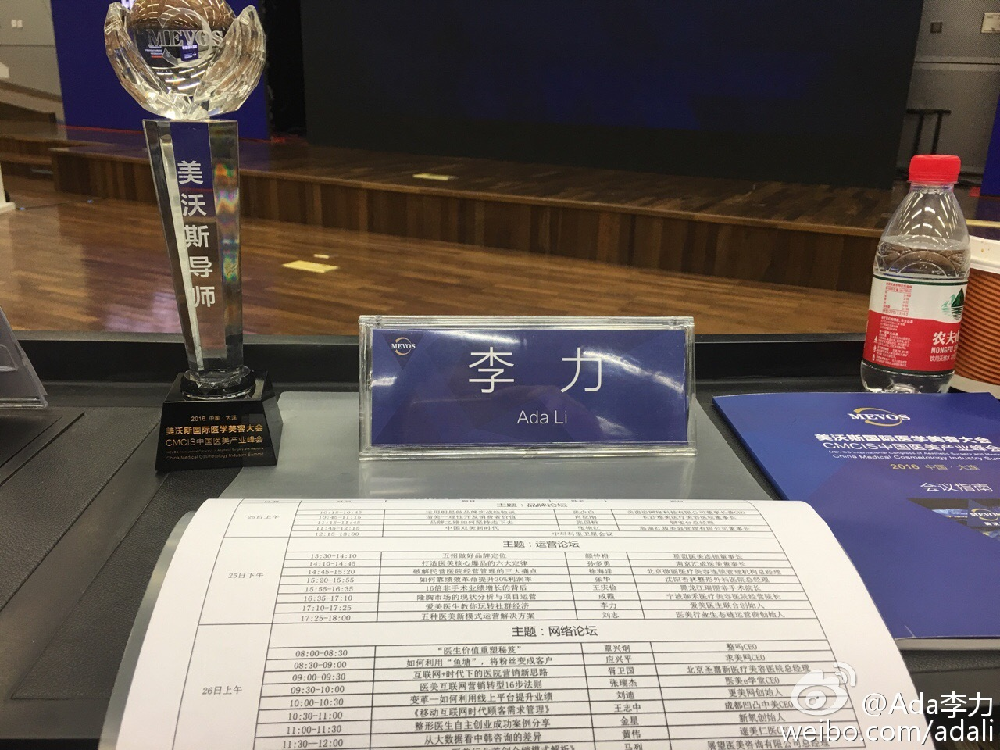

是的，采用新技术和创新，才会有胜算。医美很多机构还在采用陈旧过时的营销，不断增高的获客成本，以及新进的竞争者，一步步会绞死不变革不转型的一部分人。//@catbert：医美界，跨界人才太难得。大部分人难得见到真懂技术懂互联网的。@Ada李力:#创业# 美沃斯大会的“运营和新媒体论坛”做了个15的分享。时间太短，几乎讲不了什么，不料很多人来加微信，现场就加了几十个。我还没在PPT上留联系方式，论坛群里有人帮我晒了名片，也有人拍了照发给我。 IT行业我也做过技术的分享，运营的分享等等，也都会留联系方式。主动加我的人不多，那时面向的听众都是技术人员。正在琢磨这个有意思的现象原因。所谓的“降维打击”吗？